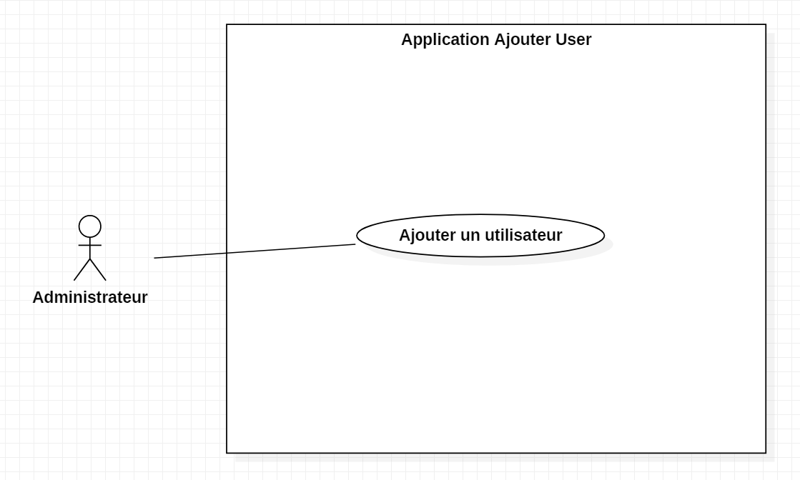

Ce projet a été réalisé lors de mon stage de deux mois dans l'entreprise Com & Company, voir ce stage en cliquant ici. Je l'ai fait seul avec l'aide de mon maitre de stage pour le déploiement de cette application et les différents droits nécessaires pour son utilisation.
Contexte
Lors de mon arrivée dans l’entreprise, de nombreuses actions pour administrer l’Active Directory étaient faites manuellement. Comme par exemple le fait d’ajouter un nouvel utilisateur dans l’AD (Active Directory). Et il n’y avait pas d’interface graphique pour lancer ce genre de scripts.
Mission
Mettre en place une interface graphique pour mon script qui permettait d’ajouter un utilisateur dans l’AD. J'ai donc pris l'initiative de créer une application Windows Form en C# pour répondre à ce besoin.
Environnement de développement
EDI
Visual studio
Langages
C#
PowerShell
Outils
Gogs / Git
Périmètre fonctionnel
Diagramme de cas d'utilisation :

Interface de l’application :

Bilan
Ce projet m’a permis de comprendre le monde du travail. Je devais le rendre dans un temps imparti et il devait être opérationnel pour une utilisation professionnelle. Je n’avais donc pas le droit à l’erreur.
Acquis
- Un apprentissage du langage de programmation PowerShell
- Meilleure connaissance en réseau et administration d’AD
- Une installation d’une application Windows Form
- Production dans un environnement professionnel
A améliorer
- Utilisation du Setup dans Visual Studio (outils qui permet l’installation d’un projet)
- Graphisme d'une application Windows Form